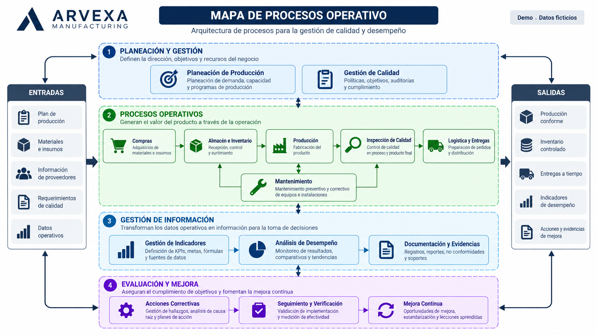
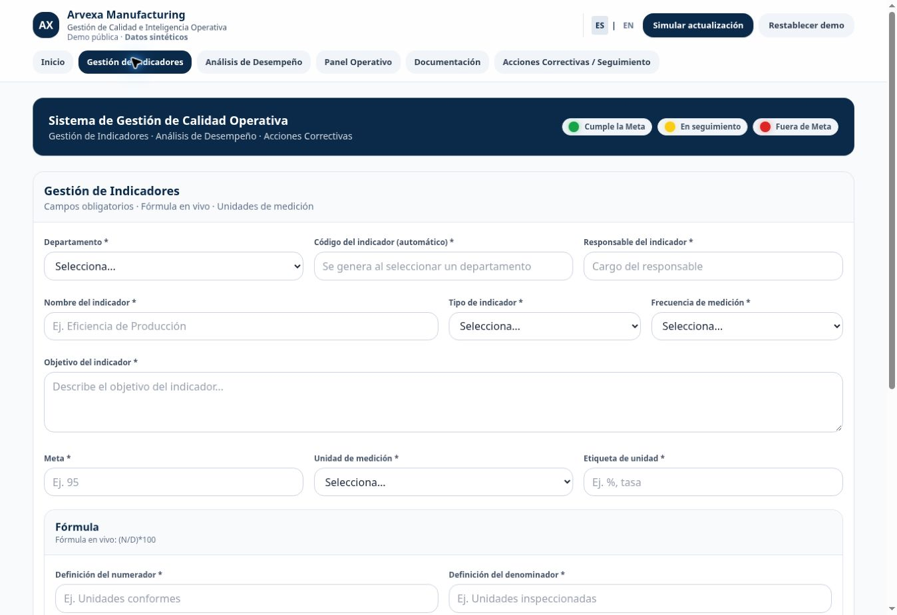
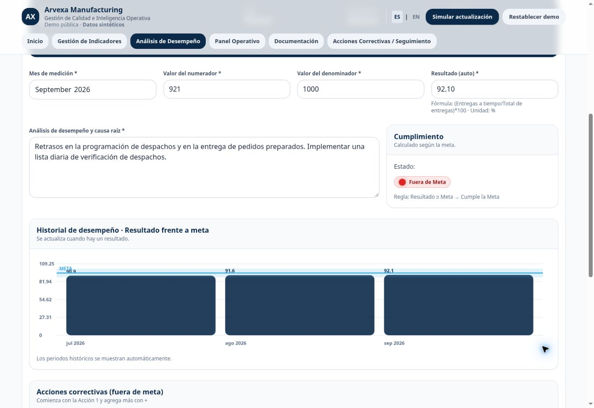
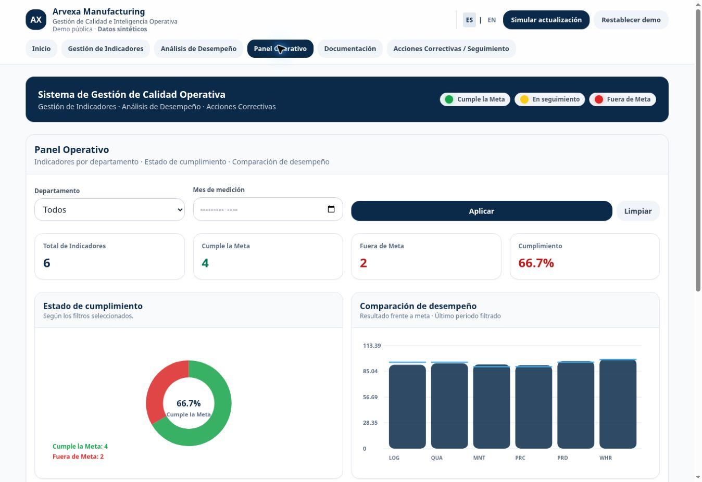
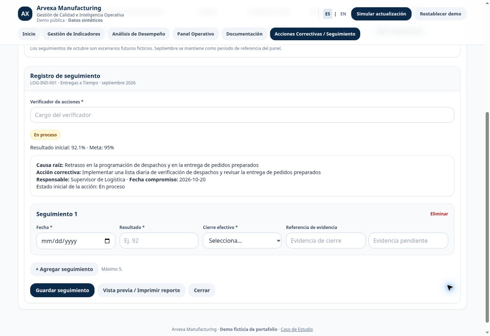

Arvexa Manufacturing
01 — Descripción General
Sistema de Gestión de Calidad Operativa
Gestión de Indicadores · Análisis de Desempeño · Acciones Correctivas
Demo de una empresa manufacturera completamente ficticia, con los departamentos de Producción, Calidad, Mantenimiento, Almacén, Logística y Compras.
02 — El Reto
Centralizar la gestión de indicadores y conectar la medición del desempeño con las acciones correctivas. Mantener las definiciones, los cálculos, las evidencias y el seguimiento dentro de un flujo de trabajo trazable.
03 — Arquitectura de Procesos
Mapa de Procesos y Flujo de Calidad Operativa
Arquitectura de procesos para la medición, análisis y mejora del desempeño.

Definir → Medir → Analizar → Actuar → Dar Seguimiento
Las fichas establecen responsables, metas, fuentes de datos y fórmulas. Las mediciones calculan el desempeño y relacionan las desviaciones con acciones correctivas. La verificación conserva las evidencias del seguimiento de manera independiente de los resultados mensuales.
04 — Solución Digital
Gestión de Indicadores

Análisis de Desempeño

Panel Operativo

Acciones Correctivas / Seguimiento

- Gestión de Indicadores: definiciones, metas, fórmulas y fichas imprimibles.
- Análisis de Desempeño: periodos de medición, cálculos, gráficos históricos, interpretación y evidencias.
- Panel Operativo: filtros por departamento, cumplimiento, comparación e indicadores fuera de meta.
- Documentación: fichas, reportes de análisis y evidencias locales ficticias.
- Acciones Correctivas / Seguimiento: acción, responsable, fecha compromiso, verificador y cierre efectivo.
El ejemplo de Calidad relaciona un rendimiento de primera pasada de 93.8% con una variación recurrente del proceso, la estandarización de inspecciones y la capacitación de operadores. La verificación ficticia de octubre alcanza 95.4% y cierra el seguimiento. Estos valores son datos de demostración, no resultados empresariales reales.
05 — Implementación Técnica
HTML · JavaScript · Tailwind CSS · Google Apps Script · Google Sheets
La arquitectura original contemplaba una integración con Google Apps Script y Google Sheets. La versión pública utiliza un conjunto local de datos ficticios en JavaScript y almacenamiento en el navegador. Incluye CSS local, gráficos en canvas e impresión desde el navegador; no requiere un servidor de datos, autenticación externa ni identificadores privados de Google.
06 — Resultados
La demo muestra gestión centralizada de indicadores, análisis estructurado del desempeño, seguimiento de acciones correctivas y trazabilidad entre registros. Estas son capacidades ilustradas por la aplicación, no afirmaciones de impacto cuantificado sobre el proyecto original.
Demo de portafolio basada en un sistema interno de gestión de calidad. Todos los nombres de empresas, datos e información operativa que se muestran son ficticios.